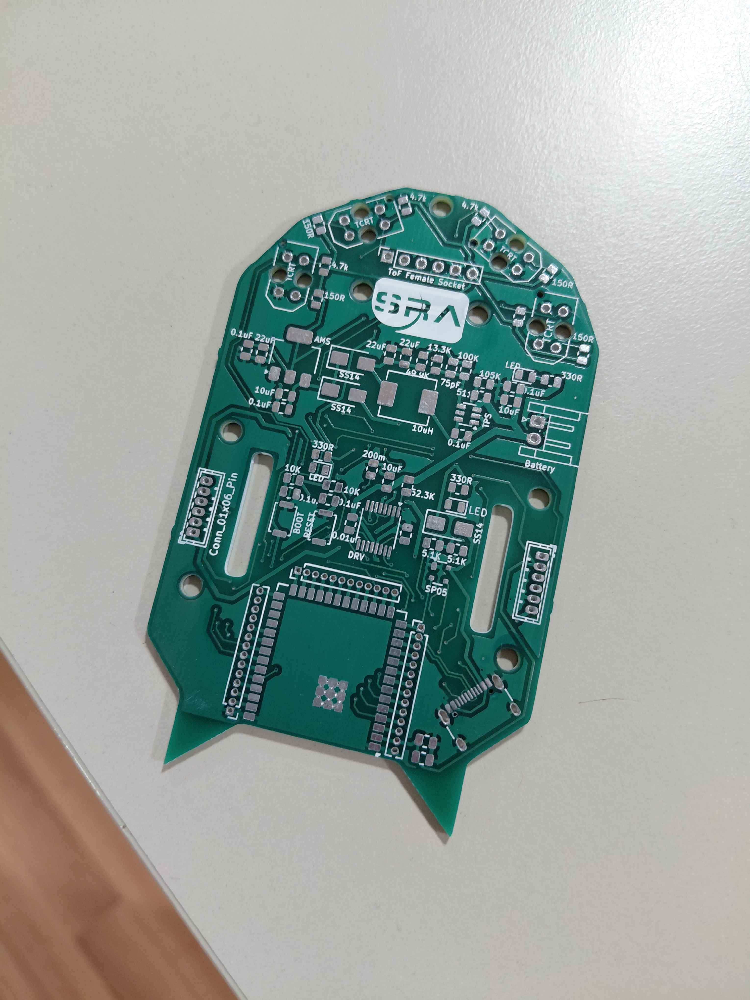
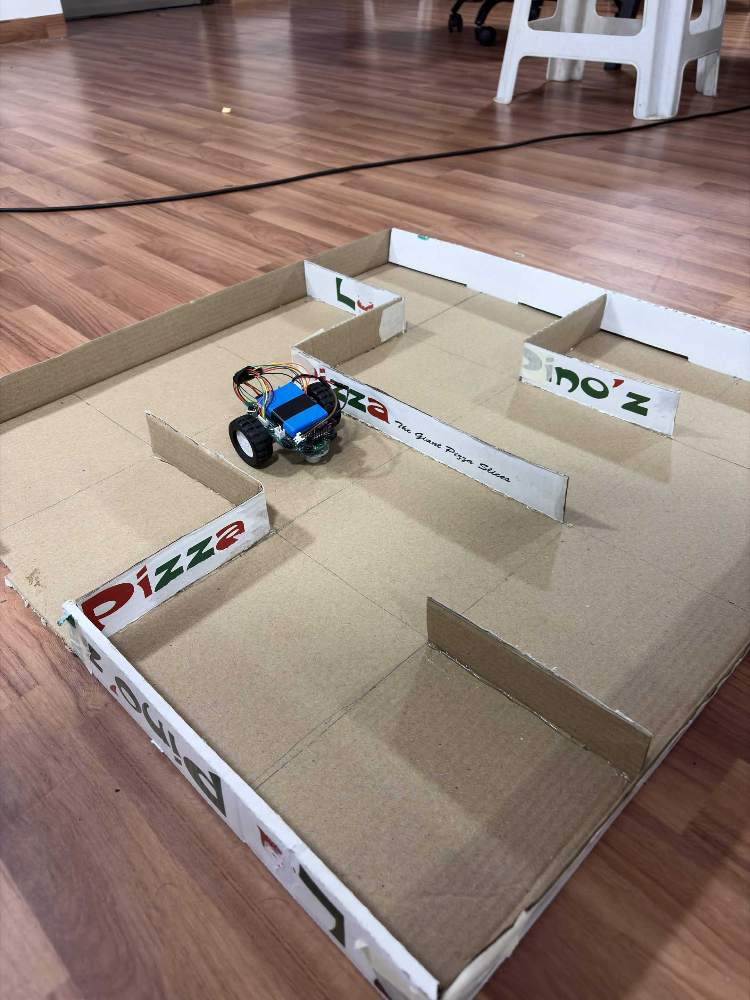

Micromouse is an autonomous maze solving bot which uses on-board sensors and maze solving algorithms to map and solve mazes. Word-wide, teams compete on all levels in various categories based on size with their Micromouse-bots in a legacy competition of the same name, with the goal to solve the maze in the shortest time possible.
Gallery

